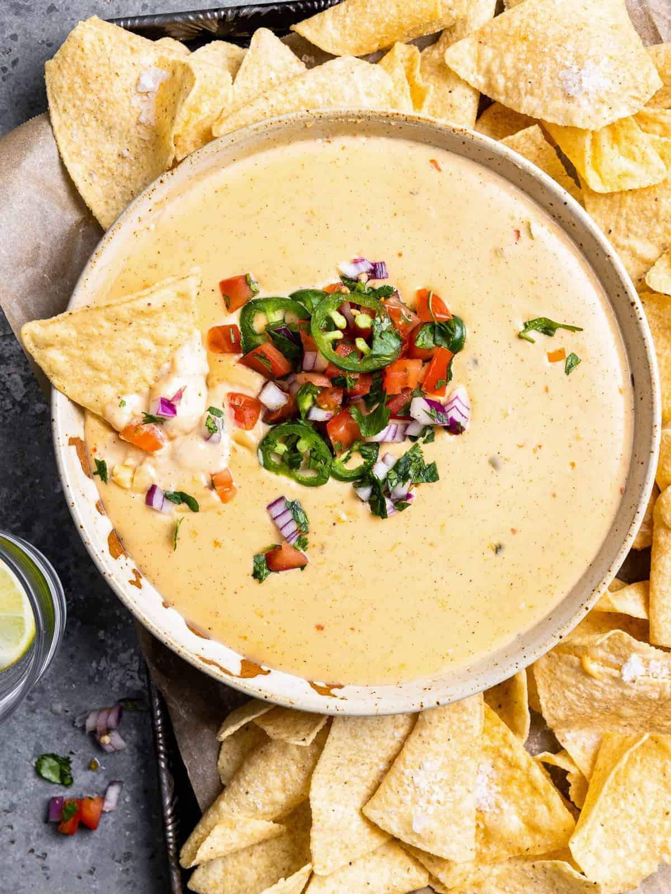

Queso Recipe

The bane of every queso-makers existence is curdling.
The use of cream cheese in my queso guards against this common issue.
The stabilizers in the cream cheese work to prevent the cheese
from curdling when heated. This works to our advantage in
the queso dip because, unlike hard cheeses like cheddar
which can separate when heated, the cream cheese will
melt and make the dip homogeneous.
Leftover queso may be stored in the refrigerator so long as it hasn’t been
left out for more than two hours. Keep the dip in a food storage container
for up to 72 hours. Reheat the queso in the microwave or on the stove
until warmed through.
Ingredients List:
- 1/2 tablespoon vegetable or canola oil
- 2 cloves garlic, minced
- 1/4 cup minced white onion (1/4 of a medium onion)
- 1 (12-ounce) can evaporated whole milk
- 1 teaspoon kosher salt
- 1 teaspoon ground cumin
- 1/4 teaspoon chili powder
- 8 ounces extra-sharp cheddar cheese, finely shredded
- 8 ounces softened cream cheese, diced
- 1 (10-ounce) can Rotel tomatoes with green chilies, drained
- 1/4 cup chopped cilantro
- 2 to 4 tablespoons whole milk, to thin the sauce as needed
Cooking Steps:
- Sauté the garlic and onion
- Add the evaporated milk and spices
- Add the cheese
- Finish the queso dip
- Top and serve
- Thin as needed